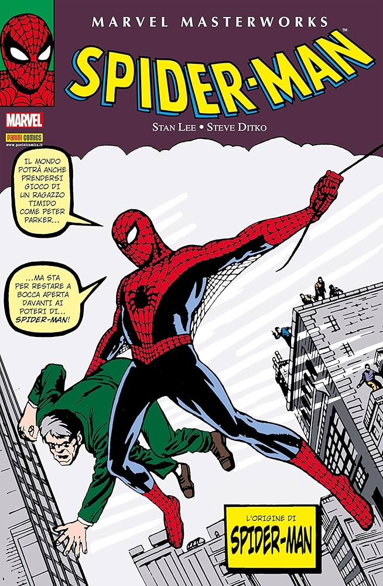

Marvel Masterworks: Spider-Man 1
USA 1962–1964Vol. 1 1962

- Collana
- Imprint
- Marvel Masterworks (cartonato)
- Marvel Masterworks (hardcover)
- Autori
- Creators
- Stan Lee (testi), Steve Ditko (disegni)
- Stan Lee (writer), Steve Ditko (artist)
- Contiene
- Collects
- Amazing Fantasy #15 + Amazing Spider-Man #1–10
- Spillato ITA
- ITA newsstand
- L'Uomo Ragno (Editoriale Corno) nn. 1–13 circa, dal 1970 — la prima edizione italiana in assoluto
- L'Uomo Ragno (Editoriale Corno) nos. 1–13 approx., from 1970 — the very first Italian edition
Perché è importante
Why it matters
È il punto zero: Amazing Fantasy #15 racconta l'origine del personaggio — il morso del ragno, zio Ben, "da grandi poteri derivano grandi responsabilità". I primi dieci numeri della serie regolare introducono quasi tutta la galleria storica dei nemici: Camaleonte, Avvoltoio, Dottor Octopus, Sandman, Lizard, Electro. Qui nasce anche il "metodo Marvel": il supereroe con i problemi quotidiani di un adolescente vero.
This is ground zero: Amazing Fantasy #15 tells the character's origin — the spider bite, Uncle Ben, "with great power there must also come great responsibility". The first ten issues of the ongoing series introduce nearly the entire classic rogues' gallery: Chameleon, Vulture, Doctor Octopus, Sandman, Lizard, Electro. This is also where the "Marvel method" is born: a superhero with the everyday problems of a real teenager.
Curiosità da collezionista
Collector's trivia
Amazing Fantasy #15 è oggi tra gli albi più preziosi dell'età d'argento: una copia in condizioni eccellenti è stata battuta all'asta per oltre 3 milioni di dollari, record per un fumetto Marvel.
Amazing Fantasy #15 is now among the most valuable issues of the Silver Age: a copy in excellent condition sold at auction for over 3 million dollars, a record for a Marvel comic.